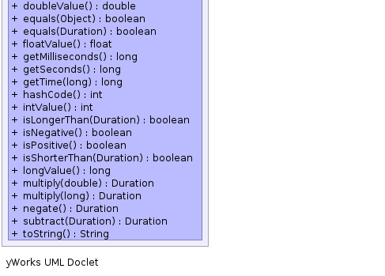

public class Duration extends java.lang.Number implements java.lang.Comparable<Duration>
A class to represent durations of time. Java does not have such a notion in a
simple form - the java Duration object is quite complex, allowing durations
in months and years that can't necessarily be compared. This is a simple
implementation that just wraps around a long.
Most constructors for these objects work in seconds.
Seconds were chosen primarily because the SI unit of time is a
second, so it seems as good a choice as any. Many durations stored in various
formats are accurate to at least seconds but not necessarily any more.
Internally the value is stored in milliseconds but can be overridden
Duration extends Number and the numerical value is milliseconds.
This is the value used when storing Durations to the database. However by default If you wish to persist objects in custom units a
DurationFieldValue with a custom resolution must be installed in the factory.
Though the numerical value is held in milliseconds the accuracy of the duration is not guaranteed to anything finer than a second. Currently, the implementation stores durations in milliseconds so will be accurate to the millisecond. As with any measurement, this object will only be as accurate as the values given to it. If the accuracy of a duration is less than a second during construction, it will never be more accurate.
|  |
| Modifier and Type | Field and Description |
|---|---|
static long |
SCALE
The ratio of seconds to value stored (1:SCALE).
|
| Constructor and Description |
|---|
Duration(java.util.Date durationSince1970)
Constructs a new
Duration using the date provided by assuming
the date is actually intended to represent a duration. |
Duration(java.util.Date start,
java.util.Date end) |
Duration(double value)
Constructs a new
Duration based on the specified time given in
seconds. |
Duration(float value)
Constructs a new
Duration based on the specified time given in
seconds. |
Duration(int value)
Constructs a new
Duration based on the specified time given in
seconds. |
Duration(long value)
Constructs a new
Duration based on the specified time given in
seconds. |
Duration(java.lang.Number value)
Constructs a new
Duration based on the specified time given in
seconds. |
Duration(java.lang.Number value,
long scale)
Constructs a new
Duration based on the specified time in some unit. |
| Modifier and Type | Method and Description |
|---|---|
Duration |
add(Duration duration)
Returns a new
Duration object that is equivalent to this
duration and the specified duration added together. |
int |
compareTo(Duration o) |
double |
doubleValue() |
boolean |
equals(Duration duration) |
boolean |
equals(java.lang.Object o)
This duration is equal to the other object if that object is a
Duration object and lasts for exactly the same length of time
as this duration |
float |
floatValue() |
long |
getMilliseconds()
Converts this duration into a measurement of time in milliseconds.
|
long |
getSeconds()
Converts this duration into a measurement of time in seconds.
|
long |
getTime(long resolution)
Get the duration in a specified unit.
|
int |
hashCode() |
int |
intValue() |
boolean |
isLongerThan(Duration duration)
Test to see if this
Duration is more than the specified
duration |
boolean |
isNegative()
Test to see if this
Duration measures a negative time
interval. |
boolean |
isPositive()
Test to see if this
Duration measures a positive time
interval. |
boolean |
isShorterThan(Duration duration)
Test to see if this
Duration is less than the specified
duration |
long |
longValue() |
Duration |
multiply(double factor)
Returns a new
Duration object that is equivalent to this
duration multiplied by the specified factor. |
Duration |
multiply(long factor)
Returns a new
Duration object that is equivalent to this
duration multiplied by the specified factor. |
Duration |
negate() |
Duration |
subtract(Duration duration)
Returns a new
Duration object that is equivalent to this
Duration with the specified Duration subtracted
from it. |
java.lang.String |
toString()
Returns this duration represented as a string in seconds.
|
public static final long SCALE
public Duration(java.lang.Number value)
Duration based on the specified time given in
seconds. Seconds is picked as the unit for the constructor because it's the
SI unit for timevalue - The duration measured in seconds.public Duration(java.lang.Number value,
long scale)
Duration based on the specified time in some unit.value - The duration measured.scale - The number of milliseconds per unit of the provided valuepublic Duration(java.util.Date durationSince1970)
Duration using the date provided by assuming
the date is actually intended to represent a duration.
java.util.Date measures it's time from the start of January
1st 1970 so this is assumed to be the star time of the duration. If this
assumption is incorrect, it may be more appropriate to use
Duration(Date, Date) instead.durationSince1970 - The duration, starting at 00:00:00.000 on January first 1970 and
lasting until the date specified.public Duration(java.util.Date start,
java.util.Date end)
public Duration(double value)
Duration based on the specified time given in
seconds. Seconds is picked as the unit for the constructor because it's the
SI unit for timevalue - The duration measured in seconds.public Duration(float value)
Duration based on the specified time given in
seconds. Seconds is picked as the unit for the constructor because it's the
SI unit for timevalue - The duration measured in seconds.public Duration(int value)
Duration based on the specified time given in
seconds. Seconds is picked as the unit for the constructor because it's the
SI unit for timevalue - The duration measured in seconds.public Duration(long value)
Duration based on the specified time given in
seconds. Seconds is picked as the unit for the constructor because it's the
SI unit for timevalue - The duration measured in seconds.public boolean equals(java.lang.Object o)
Duration object and lasts for exactly the same length of time
as this durationequals in class java.lang.Objecto - The object for comparisiontrue if the other object is a Duration
that lasts exactly as long as this durationObject.equals(java.lang.Object)public boolean equals(Duration duration)
duration - equals(Object)public long getMilliseconds()
long.public long getTime(long resolution)
resolution - size of unit in milliseconds.public long getSeconds()
long.public int hashCode()
hashCode in class java.lang.Objectpublic boolean isShorterThan(Duration duration)
Duration is less than the specified
durationduration - The duration for comparisontrue if this duration is less than the specified
duration. false if it is the same or longer.public boolean isLongerThan(Duration duration)
Duration is more than the specified
durationduration - The duration for comparisontrue if this duration is more than the specified
duration. false if it is the same or less.public boolean isNegative()
Duration measures a negative time
interval. In other words, the duration is less than zero seconds in lengthtrue if the length of this duration is less than 0
seconds. false if it is zero or positivepublic boolean isPositive()
Duration measures a positive time
interval. In other words, the duration is less than zero seconds in lengthtrue if the length of this duration is greater or
equal to 0 seconds. false if it is negativepublic java.lang.String toString()
toString in class java.lang.Objectpublic Duration add(Duration duration)
Duration object that is equivalent to this
duration and the specified duration added together. Nether this object nor
duration will be altered by this methodduration - The Duration that will be added with this
Duration to form a new Duration.Duration that is the sum of this Duration
and Durationpublic Duration multiply(long factor)
Duration object that is equivalent to this
duration multiplied by the specified factor.factor - The quantity to multiply the length of this duration withDuration that is factor times bigger
than this Duration.public Duration multiply(double factor)
Duration object that is equivalent to this
duration multiplied by the specified factor. TThe double argument allows
factor to be less than zero, allowing division to be
indirectly performedfactor - The quantity to multiply the length of this duration withDuration that is factor times bigger
than this Duration.public Duration negate()
Duration.public Duration subtract(Duration duration)
Duration object that is equivalent to this
Duration with the specified Duration subtracted
from it. Nether this object nor duration will be altered by
this methodduration - The Duration that will be subtracted from this
Duration to form a new Duration.Duration that is equivalent to this Duration
less durationpublic double doubleValue()
doubleValue in class java.lang.Numberpublic float floatValue()
floatValue in class java.lang.Numberpublic int intValue()
intValue in class java.lang.Numberpublic long longValue()
longValue in class java.lang.Number